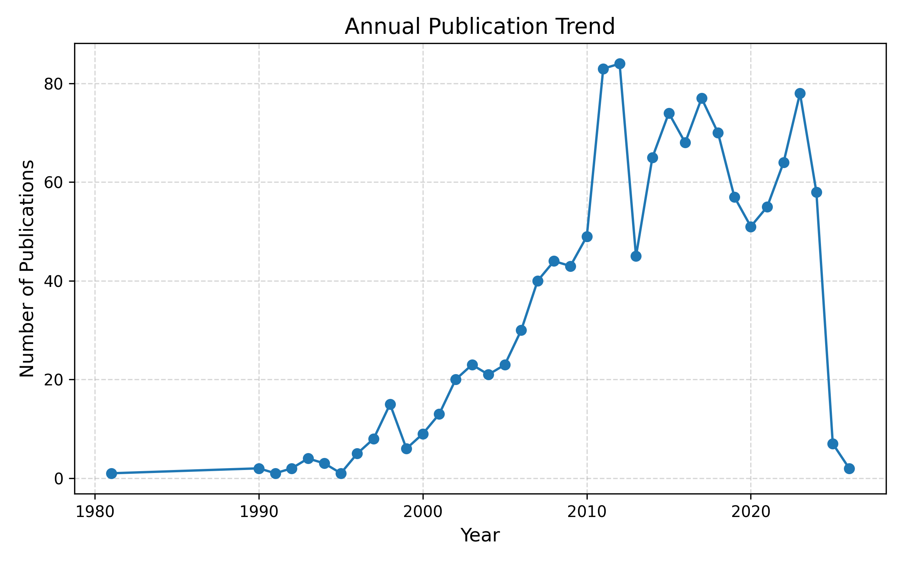
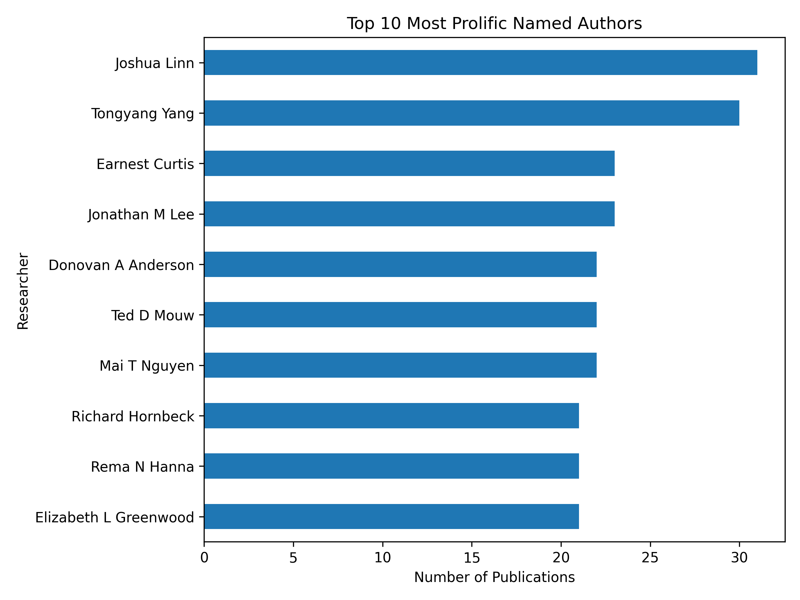
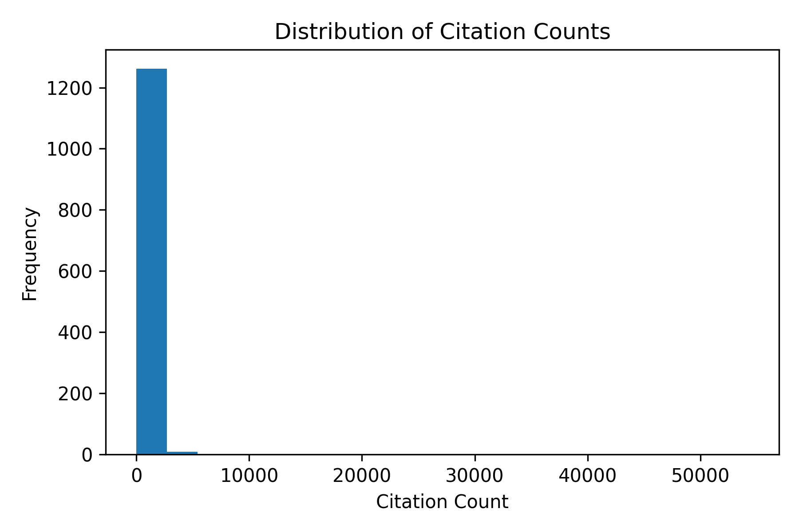
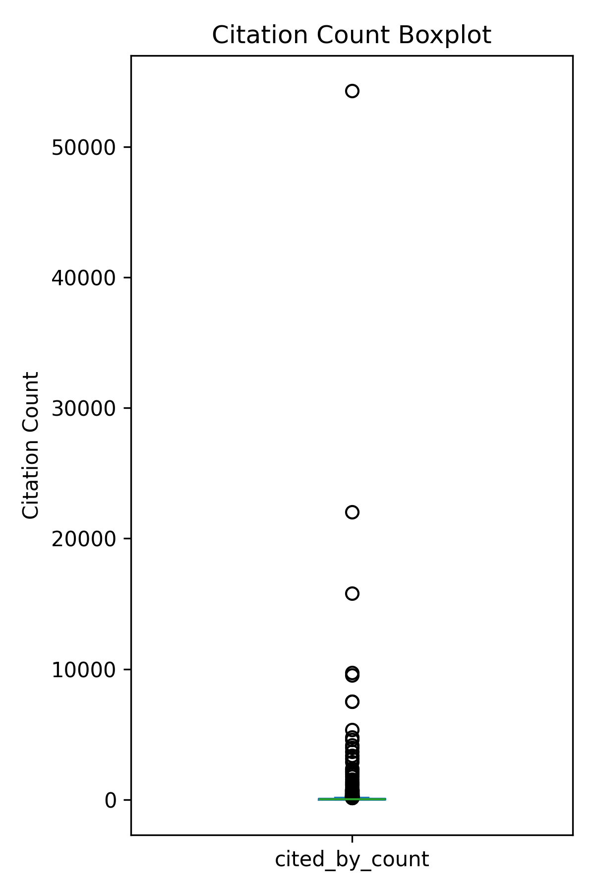
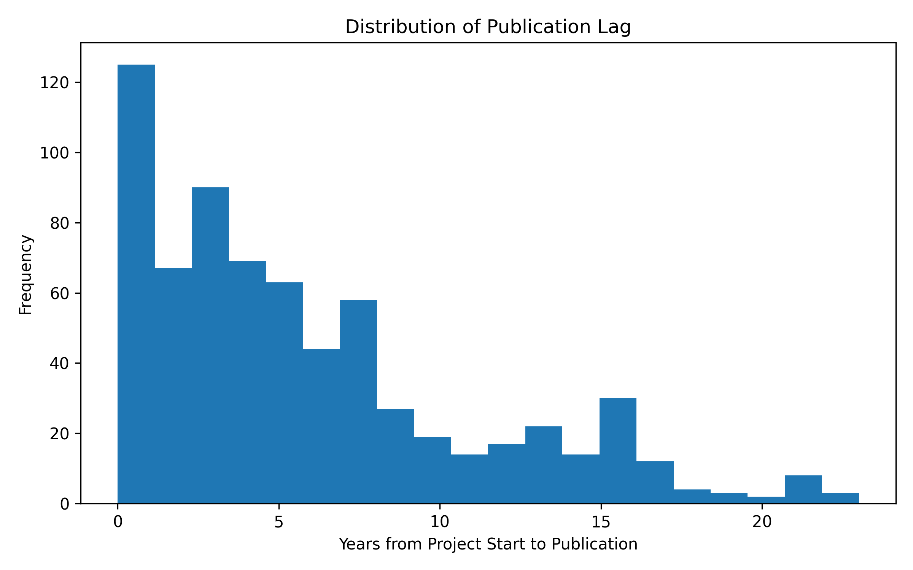
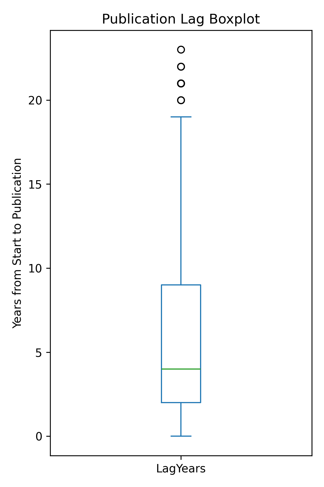
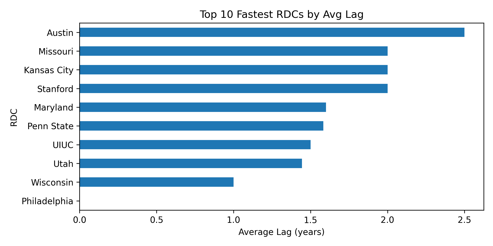
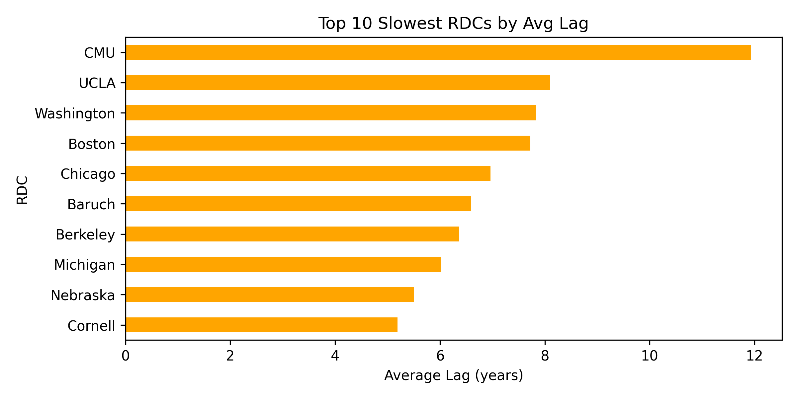

This site presents the visual results and findings from our group project in CIT5900. It includes both Exploratory Data Analysis (EDA) and Modeling & Prediction based on FSRDC research output data.
Boston leads with 149 outputs, followed by Triangle and Michigan. The top 10 shows a sharp drop from the top three to others.
| RDC | Count |
|---|---|
| Boston | 149 |
| Triangle | 126 |
| Michigan | 124 |
| Chicago | 117 |
| Washington | 92 |
| Atlanta | 63 |
| Baruch | 63 |
| Texas | 60 |
| UCLA | 58 |
| Utah | 55 |
Research output was minimal before 2000, rose steadily to peak in 2011–2012, and stabilized around 80 publications per year. The 2025 dip likely reflects incomplete data.
Joshua Linn (31) and Tongyang Yang (30) top the list. Most other top authors have 22–23 outputs, showing a stable group of high contributors.
Most FSRDC publications receive fewer than 70 citations, but a few highly cited papers push the average above 200. The histogram and boxplot reveal a right-skewed distribution with several outliers.
 The table below summarizes citation statistics across 1,277 publications.
| Metric | Value |
|---|---|
| Count | 1277 |
| Mean | 212.23 |
| Std Dev | 1802.03 |
| Min | 0 |
| 25% | 5 |
| Median (50%) | 21 |
| 75% | 70 |
| Max | 54,257 |
From the tables and scatter plot below, while Boston, Michigan, and Triangle lead in publication count, Washington and Yale stand out with the highest average citations. This suggests that a few highly cited papers can outweigh large volumes of moderately cited ones in research impact.
| ProjectRDC | Productivity | AvgCitations |
|---|---|---|
| Boston | 149 | 166.84 |
| Triangle | 126 | 144.06 |
| Michigan | 124 | 164.58 |
| Chicago | 117 | 140.98 |
| Washington | 92 | 484.84 |
| Atlanta | 63 | 407.20 |
| Baruch | 63 | 193.23 |
| Texas | 60 | 51.11 |
| UCLA | 58 | 177.67 |
| Utah | 55 | 199.77 |
| ProjectRDC | Productivity | AvgCitations |
|---|---|---|
| Washington | 92 | 484.84 |
| Yale | 5 | 483.40 |
| Atlanta | 63 | 407.20 |
| Utah | 55 | 199.77 |
| Baruch | 63 | 193.23 |
| UCLA | 58 | 177.67 |
| Seattle | 17 | 167.56 |
| Boston | 149 | 166.84 |
| Michigan | 124 | 164.58 |
| Triangle | 126 | 144.06 |
The median publication lag is 4 years, with most outputs published within the first decade. However, a small number of outliers take more than 20 years. The histogram shows a right-skewed distribution centered around 0–5 years, while the boxplot highlights those extreme cases.
 At the RDC level, Philadelphia and Wisconsin have the fastest average lags (~0–1 years), while CMU, UCLA, and Washington show the longest delays. This suggests variability in research turnaround depending on project complexity or dissemination speed.
 